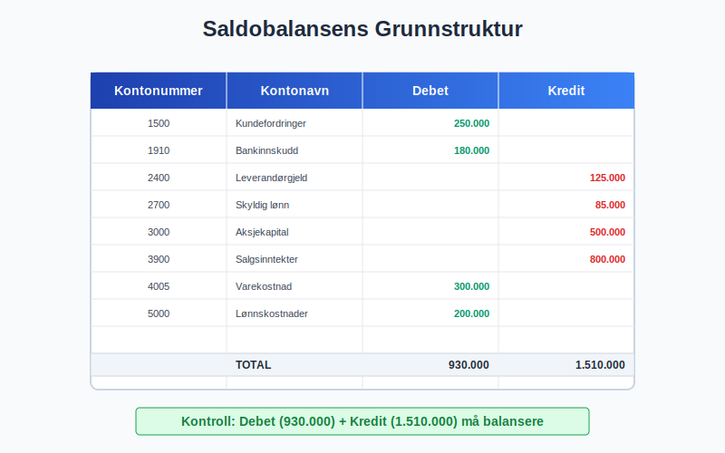
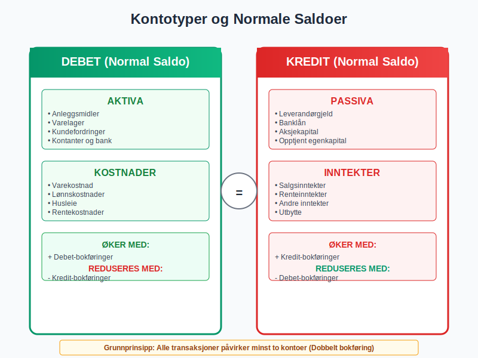
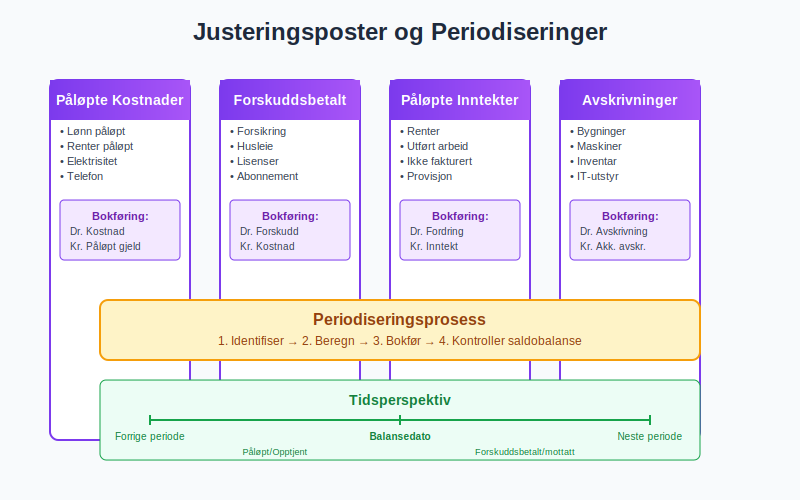
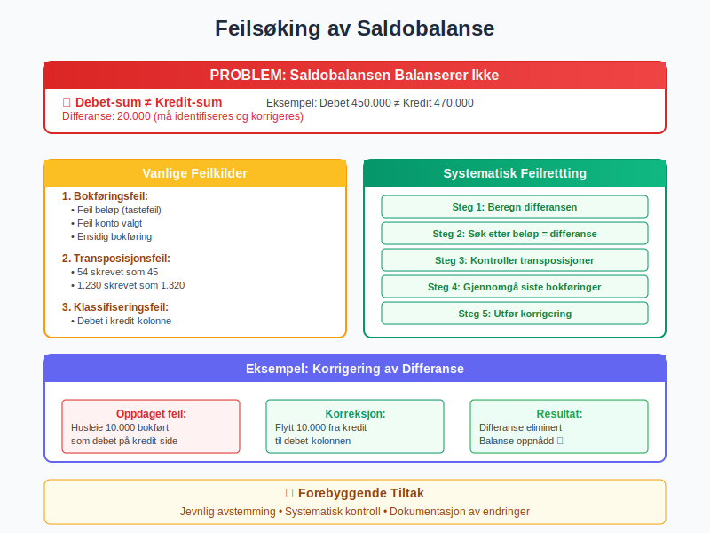
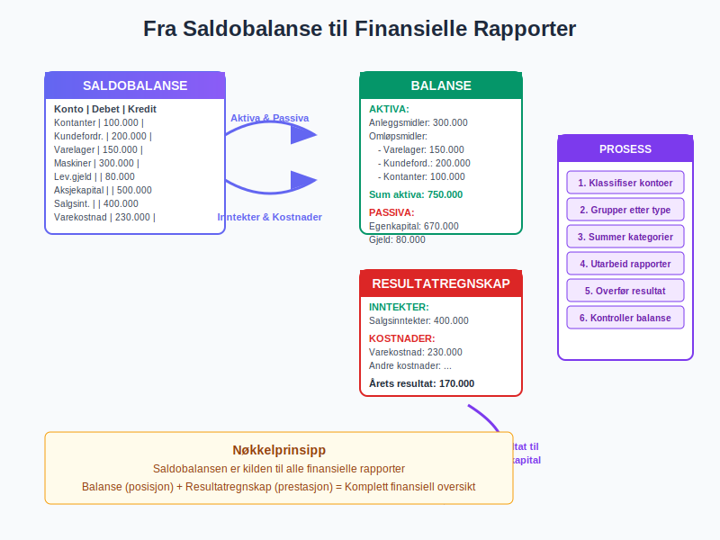
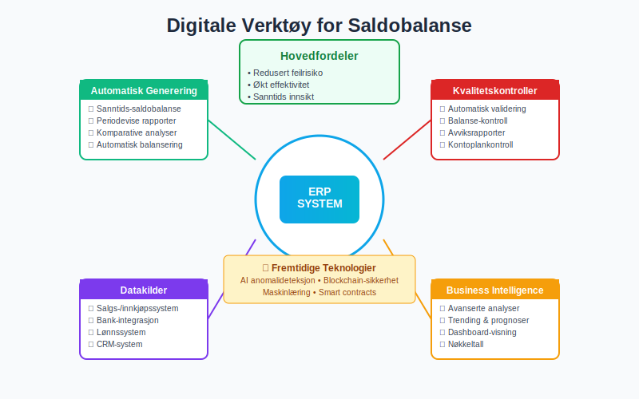
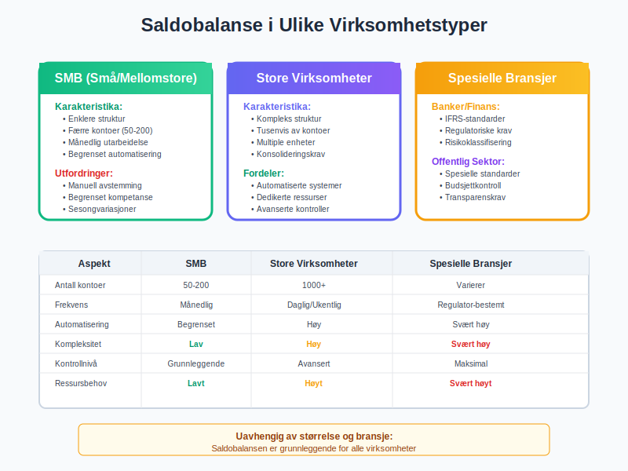
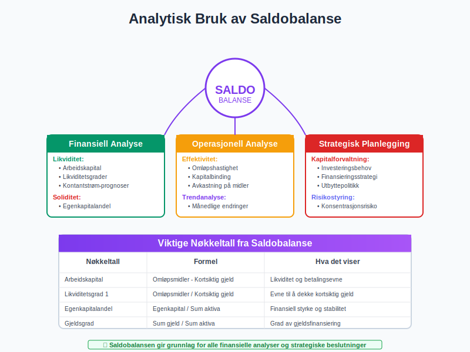
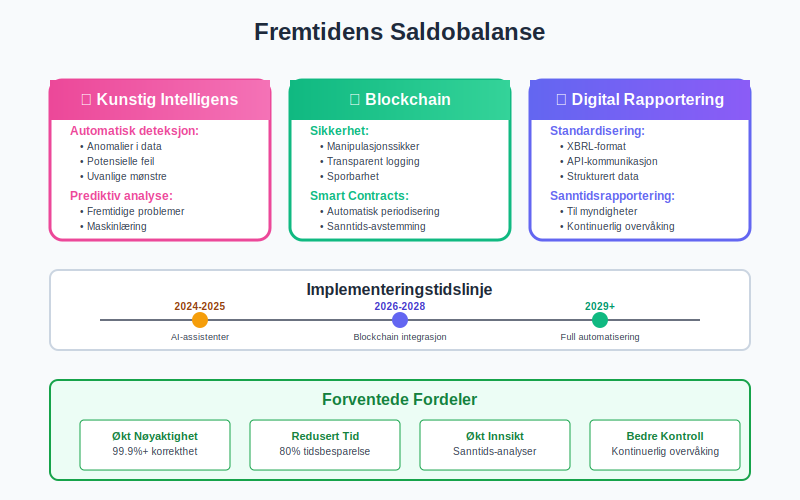
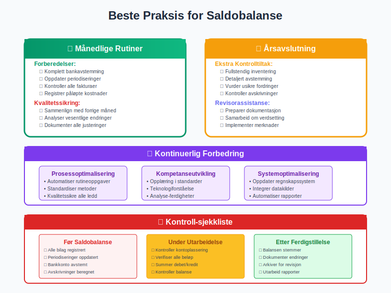

Saldobalanse er et av de mest fundamentale verktøyene i regnskapsføring og representerer en detaljert oversikt over alle kontoer i bedriftens kontoplan på et bestemt tidspunkt. Dette dokumentet fungerer som grunnlaget for utarbeidelse av balansen og andre finansielle rapporter, og er en kritisk komponent i enhver regnskapsprosess.
Seksjon 1: Saldobalansens Grunnleggende Konsept
1.1 Definisjon og Formål
En saldobalanse (også kalt prøvebalanse eller råbalanse) er en systematisk oppstilling av alle kontoer i bedriftens hovedbok med deres respektive debet- og kreditsaldoer på et spesifikt tidspunkt. Saldobalansens primære formål er å:
- Kontrollere at den grunnleggende regnskapsligningen er oppfylt
- Sikre at alle bokføringer er korrekt registrert
- Danne grunnlag for utarbeidelse av finansielle rapporter
- Identifisere potensielle feil i regnskapsføringen

1.2 Saldobalansens Plass i Regnskapsprosessen
Saldobalansen utarbeides typisk ved:
- Månedens slutt for månedlig regnskapsavslutning og fastsettelse av utgående balanse
- Kvartalets slutt for kvartalsrapportering
- Årets slutt som del av årsavslutningsprosessen
- Ved behov for spesielle analyser eller kontroller
Seksjon 2: Saldobalansens Struktur og Komponenter
2.1 Standardoppsettet
En typisk saldobalanse inneholder følgende kolonner:
| Kontonummer | Kontonavn | Debet | Kredit |
|---|---|---|---|
| 1500 | Kundefordringer | 250.000 | |
| 1910 | Bankinnskudd | 180.000 | |
| 2400 | Leverandørgjeld | 125.000 | |
| 2700 | Skyldig lønn | 85.000 | |
| 3000 | Aksjekapital | 500.000 |
2.2 Kontotyper og Normale Saldoer
Ulike kontotyper har normale saldoer på forskjellige sider:
Aktiva-kontoer (Debet-normal)
- Anleggsmidler: Bygninger, maskiner, inventar
- Omløpsmidler: Varelager, kundefordringer, kontanter
Passiva-kontoer (Kredit-normal)
- Gjeld: Leverandørgjeld, banklån
- Egenkapital: Aksjekapital, opptjent egenkapital
Inntekts-kontoer (Kredit-normal)
- Driftsinntekter: Salgsinntekter, andre driftsinntekter
- Finansinntekter: Renteinntekter, utbytte
Kostnads-kontoer (Debet-normal)
- Driftskostnader: Varekostnad, lønnskostnader, husleie
- Finanskostnader: Rentekostnader, bankomkostninger

Seksjon 3: Utarbeidelse av Saldobalanse
3.1 Fremgangsmåte
Utarbeidelsen av en saldobalanse følger en systematisk prosess:
- Samle alle hovedbokskontoer med deres saldoer
- Klassifiser kontoer etter type og normal saldo
- Plasser saldoer i korrekt kolonne (debet eller kredit)
- Summer kolonner og kontroller at de er like
- Identifiser eventuelle avvik og korriger feil
3.2 Justeringsposter og Periodiseringer
Før den endelige saldobalansen utarbeides, må alle nødvendige periodiseringer og justeringsposter være bokført:
- Påløpte kostnader som ikke er fakturert ennå
- Forskuddsbetalte kostnader som gjelder fremtidige perioder
- Påløpte inntekter som ikke er fakturert ennå
- Forskuddsmottatte inntekter som gjelder fremtidige perioder
- Avskrivninger på anleggsmidler

Seksjon 4: Kvalitetskontroll og Feilsøking
4.1 Kontrolltiltak
For å sikre korrekthet i saldobalansen:
Matematisk Kontroll
- Debet-sum = Kredit-sum: Den grunnleggende kontrollen
- Kryssjekk mot hovedbok: Alle saldoer må stemme med hovedboken
- Avstemming av nøkkelkontoer: Bank, kunder, leverandører
Logisk Kontroll
- Normale saldoer: Kontroller at kontoer har saldo på riktig side
- Urimelige saldoer: Identifiser saldoer som virker urealistiske
- Manglende kontoer: Sjekk at alle aktive kontoer er inkludert
4.2 Vanlige Feilkilder
Bokføringsfeil
- Feil beløp i bilagsregistrering
- Feil konto valgt ved bokføring
- Feil dato som påvirker periodisering
- Doble bokføringer av samme bilag
Systemfeil
- Tekniske feil i regnskapssystemet
- Manglende overføringer mellom moduler
- Avbrutte kjøringer av automatiske rutiner
4.3 Feilrettingsprosess
Når feil oppdages i saldobalansen:
- Identifiser årsaken til avviket
- Spor feilen tilbake til kilden
- Utfør korrigerende bokføringer hvis nødvendig
- Oppdater saldobalansen med korrekte tall
- Dokumenter rettelsen for revisjon og kontroll

Seksjon 5: Fra Saldobalanse til Finansielle Rapporter
5.1 Utarbeidelse av Balanse
Saldobalansen er det direkte grunnlaget for balansen:
Aktiva-siden
- Anleggsmidler: Summer alle relevant kontoer med debet-saldo
- Omløpsmidler: Summer alle omløpskontoer med debet-saldo
- Trekk fra: Akkumulerte avskrivninger (kredit-saldo)
Passiva-siden
- Egenkapital: Summer alle egenkapitalkontoer med kredit-saldo
- Gjeld: Summer alle gjeldskontoer med kredit-saldo
- Inkluder: Årets resultat fra resultatregnskapet
5.2 Utarbeidelse av Resultatregnskap
Fra saldobalansen hentes:
Inntekter
- Driftsinntekter: Alle salgs- og inntektskontoer (kredit-saldo)
- Andre inntekter: Finansinntekter og andre inntekter (kredit-saldo)
Kostnader
- Driftskostnader: Varekostnad, lønn, andre kostnader (debet-saldo)
- Finanskostnader: Rentekostnader og finansielle kostnader (debet-saldo)
| Regnskapspost | Saldo Type | Rapport |
|---|---|---|
| Salgsinntekter | Kredit | Resultatregnskap |
| Varekostnad | Debet | Resultatregnskap |
| Kundefordringer | Debet | Balanse |
| Leverandørgjeld | Kredit | Balanse |
| Aksjekapital | Kredit | Balanse |

Seksjon 6: Digitale Verktøy og Automatisering
6.1 Moderne Regnskapssystemer
Dagens regnskapssystemer tilbyr avanserte funksjoner for saldobalanse:
Automatisk Generering
- Sanntids-saldobalanse: Oppdateres automatisk ved hver bokføring
- Periodevise rapporter: Automatisk generering ved måned-/årsslutt
- Komparative analyser: Sammenligning med tidligere perioder
Kvalitetskontroller
- Automatisk balansering: Systemet varsler hvis debet ≠ kredit
- Validering av bokføringer: Kontroller mot kontoplan
- Avviksrapporter: Identifisering av uvanlige saldoer
6.2 Integrasjon med Andre Systemer
ERP-systemer
- Fullintegrert regnskapsføring fra salgs- og innkjøpssystemer
- Automatisk periodisering av gjentakende poster
- Sanntids rapportering til ledelse og interessenter
Business Intelligence
- Avanserte analyser av saldobalanse-data
- Trending og prognoser basert på historiske data
- Dashboard-visning av nøkkeltall fra saldobalansen

Seksjon 7: Saldobalanse i Ulike Virksomhetstyper
7.1 Små og Mellomstore Bedrifter (SMB)
For SMB-virksomheter er saldobalansen ofte:
Enklere Struktur
- Færre kontoer og mindre kompleksitet
- Månedlig utarbeidelse for intern kontroll
- Grunnlag for budsjettering og planlegging
Praktiske Utfordringer
- Begrenset regnskapskompetanse internt
- Manuell avstemming av nøkkelkontoer
- Sesongvariasjoner som påvirker saldostrukturen
7.2 Store Virksomheter og Konsern
For større virksomheter innebærer saldobalansen:
Kompleks Struktur
- Tusenvis av kontoer på detaljert nivå
- Multiple enheter og kostsentre
- Konsolideringskrav for konsernregnskapet
Avanserte Kontroller
- Automatiserte avstemminger
- Internkontroll-rutiner
- Revisoriske kontroller og validering
7.3 Spesielle Bransjer
Banker og Finansinstitusjoner
- Spesielle regnskapsstandarder (IFRS)
- Regulatoriske rapporteringskrav
- Risikoklassifisering av balanseposter
Offentlig Sektor
- Regnskapsstandarder for offentlig sektor
- Budsjettkontroll og -oppfølging
- Transparens og offentlig innsyn

Seksjon 8: Analytisk Bruk av Saldobalanse
8.1 Finansiell Analyse
Saldobalansen gir grunnlag for omfattende finansiell analyse:
Likviditetsanalyse
- Arbeidskapital = Omløpsmidler - Kortsiktig gjeld
- Likviditetsgrader for å vurdere betalingsevne
- Kontantstrøm-prognoser
Soliditetsanalyse
- Egenkapitalandel og gjeldsgrad
- Rentedekningsgrad og finansiell risiko
- Kapitalstruktur og finansieringskilder
8.2 Operasjonell Analyse
Effektivitetsmål
- Omløpshastighet for varelager og kundefordringer
- Kapitalbinding i ulike eiendeler
- Avkastning på investerte midler
Trendanalyse
- Månedlige endringer i nøkkelkontoer
- Sesongmønstre og sykliske variasjoner
- Vekstrater for kritiske balanseposter
8.3 Strategisk Planlegging
Kapitalforvaltning
- Investeringsbehov i anleggsmidler
- Finansieringsstrategi for vekst
- Utbyttepolitikk og kapitalstruktur
Risikostyring
- Konsentrasjonsrisiko i kundeportefølje
- Valutarisiko i utenlandske eiendeler
- Likviditetsrisiko og beredskap

Seksjon 9: Regulatoriske Krav og Standarder
9.1 Norske Regnskapsstandarder
Regnskapsloven
- Grunnleggende prinsipper for regnskapsføring
- Krav til saldobalanse som del av årsregnskapet
- Konserninterne elimineringer for konsernregnskapet
God Regnskapsskikk
- Beste praksis for utarbeidelse av saldobalanse
- Konsekvens i regnskapsprinsipper fra år til år
- Sammenlignbarhet med andre virksomheter
For mer om dette, se God regnskapsskikk.
9.2 Internasjonale Standarder
IFRS og IAS
- Internasjonale regnskapsstandarder for børsnoterte selskaper
- Komplekse verdsettingsregler for finansielle instrumenter
- Utvidede notekrav og tilleggsopplysninger
Sarbanes-Oxley
- Internkontrollkrav for amerikanske børsnoterte selskaper
- Ledelsesattestasjon av finansielle rapporter
- Ekstern revisorbekreftelse av kontrollsystemer
Seksjon 10: Fremtidige Utviklingstrender
10.1 Teknologiske Fremskritt
Kunstig Intelligens
- Automatisk anomalideteksjon i saldobalanse-data
- Prediktiv analyse for å forutse problemer
- Maskinlæring for forbedret avstemming
Blockchain og Distributed Ledger
- Transparent og manipulasjonssikker regnskapsføring
- Sanntids-avstemming mellom parter
- Smart contracts for automatisk periodisering
10.2 Regulatoriske Endringer
Digitalisering av Rapportering
- XBRL-format for strukturert rapportering
- API-basert kommunikasjon med myndigheter
- Sanntidsrapportering til skattemyndigheter
Bærekraftsrapportering
- ESG-data integrert i saldobalansen
- Klimarelaterte eiendeler og forpliktelser
- Sosiale og miljømessige påvirkningsfaktorer

Seksjon 11: Praktiske Tips og Beste Praksis
11.1 Månedlige Rutiner
Forberedelser
- Komplett avstemming av bankkontoer før saldobalanse
- Oppdatering av alle periodiseringer
- Kontroll av alle fakturerte og mottatte fakturaer
Kvalitetssikring
- Kryssjekk med forrige måneds saldobalanse
- Analyse av vesentlige endringer
- Dokumentasjon av alle justeringer
11.2 Årsavslutning
Ekstra Kontrolltiltak
- Fullstendig inventering av alle anleggsmidler
- Detaljert avstemming av alle nøkkelkontoer
- Vurdering av usikre fordringer og forpliktelser
Revisorassistanse
- Preparering av dokumentasjon for revisor
- Samarbeid om komplekse verdsettingsspørsmål
- Implementering av revisormerknader
11.3 Kontinuerlig Forbedring
Prosessoptimalisering
- Automatisering av rutineoppgaver
- Standardisering av arbeidsmetoder
- Kvalitetssikring av alle ledd i prosessen
Kompetanseutvikling
- Opplæring i nye regnskapsstandarder
- Teknologiforståelse for bedre systembruk
- Analyse-ferdigheter for dypere innsikt

Konklusjon
Saldobalansen er det fundamentale verktøyet som sikrer integritet og nøyaktighet i enhver virksomhets regnskapsføring. Som en detaljert oversikt over alle kontoer i bedriftens kontoplan, fungerer den som kvalitetskontroll, analyseverktøy og grunnlag for alle finansielle rapporter.
Kritiske Suksessfaktorer
Systematisk tilnærming til utarbeidelse og kontroll er avgjørende for å oppnå pålitelige resultater. Dette inkluderer regelmessig avstemming, grundig dokumentasjon og konsistent kvalitetssikring.
Teknologisk støtte fra moderne regnskapssystemer gjør prosessen mer effektiv og reduserer risikoen for feil, men krever fortsatt faglig kompetanse og kritisk vurdering fra regnskapsføreren.
Internkontroll og avvikshåndtering må være integrerte deler av saldobalanse-prosessen for å sikre korrekthet og pålitelighet.
Fremtidens Saldobalanse
Med økende digitalisering og automatisering vil saldobalansen utvikle seg fra et manuelt kontrollverktøy til en intelligent, sanntids-basert analyseplattform som gir kontinuerlig innsikt i virksomhetens finansielle helse.
Forståelse og mestring av saldobalansens prinsipper og praksis forblir imidlertid grunnleggende for alle som arbeider med regnskapsføring og finansiell rapportering. Den representerer ikke bare et teknisk verktøy, men en fundamental byggesten i det moderne regnskapssystemet som sikrer transparens, nøyaktighet og tillit i finansiell rapportering.